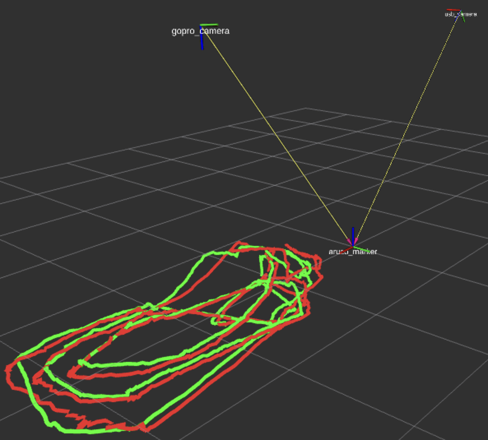
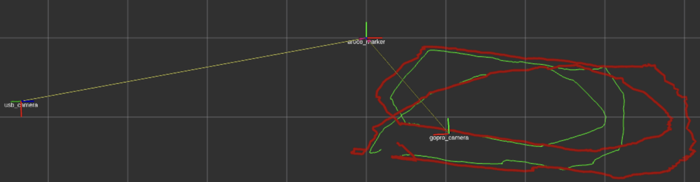
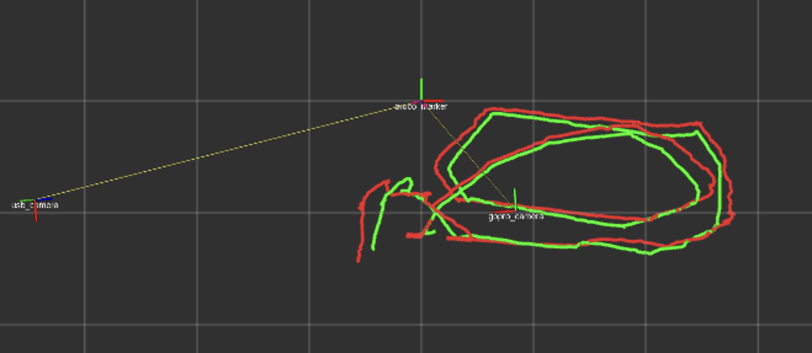
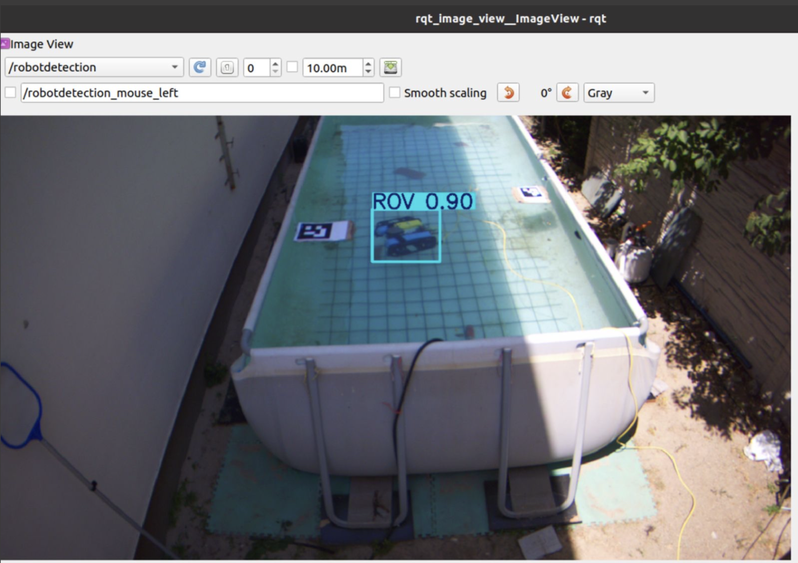
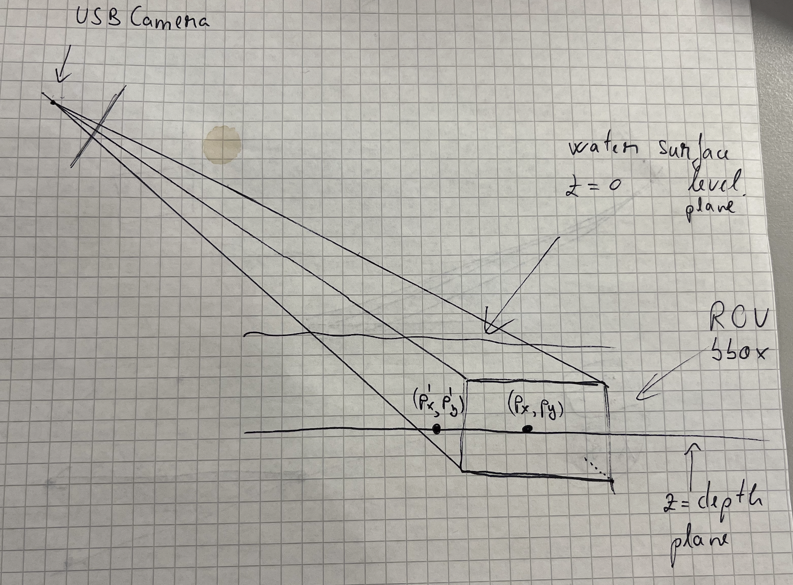

Related: SeaClear, Multiple View Geometry in Computer Vision, SeaClear BlueROV Detection
So far in SeaClear, I’ve been using two cameras to create a world coordinate system with the AruCo Marker as the reference which, more or less, looked like this:

After a talk with my professor from my RPCN course at Twente — George Vosselman, I successfully noted all the wrong assumptions I’ve made so far in this project. The impression he left on me is that he is a real expert in perception. It’s incredible how his “no” was a absolute truth in the matter (hope it makes sense).
Using only one ArUco Marker to create the world frame
How does OpenCV get the rotation and translation from the aruco to the camera?: The marker has 4 corners with known 3D positions (a square). OpenCV’s solvePnP finds the pose that projects those 4 known 3D points onto the 4 detected 2D pixel locations. Four point correspondences = 8 constraints (each point gives ), which is enough to solve for 6 unknowns.
Marker (known 3D square) Image (detected 2D corners)
●───────● ●────●
│ │ ──────→ / \
│ │ projection / \
●───────● ●──────────●
So one marker technically gives 6 DOF, but the accuracy degrades with distance. When the marker is far away (e.g. 4m in my case with the usbcamera), the 4 corners are close together in pixel space. And small pixel errors propagate in large pose errors, especially in:
- Z (depth) estimation
- Rotation around X and Y axes
Close marker (good): Far marker (bad):
●─────────● ●──●
│ │ 100+ pixels │ │ 20 pixels
│ │ between corners ●──● between corners
●─────────●

In the example above:
- the ArUCo Marker is wide and clear in the GoPro’s POV,
- but in the UsbCamera POV, the marker is considerably smaller and at a too random of an angle.
- This makes for the second case (far marker — bad) in case of the UsbCamera. We use 4 points that are close to each other in terms of pixels and maybe not enough to actually estimate the rotation and translation vectors from the camera to the world.
- I observed that by preprocessing the frame and then detecting the corners helped a lot in the quality of the trajectories:


Treating the whole ROV as the feature
In the detection of the BlueROV, I always get the center point of the bounding box returned by the CNN. This means I treat the whole ROV as the feature, which makes for a lot of errors when the angle is steep (in the case of the UsbCamera).

I covered in Ray Tracing Through Water how I extract the point in the world frame. The main idea is that I intersect a ray from the center of each camera to the ROV, considering 2 planes:
- z 0 at the water surface level
- z depth level from the IMU mounted on the ROV
Through those two planes, I account for the refraction with the water.
So here comes the issue: when you treat the whole robot as the feature, you get its center point and that makes up for the plane defined by z depth. But what happens, any point on that plane makes for a correct point on the ROV plane, which is wrong! I tried my best putting it on paper, where the points (P’ P’) and (P P) would both be taken as correct by the algorithm, since they sit on the same plane. On the GoPro’s BEV POV, it does not affect the results so much since the angle helps, but in the case of the UsbCamera, the steep angle makes the detection of P’ instead of P much more possible.
The solution: Choosing a smaller feature to detect on the ROV. This ensures smaller room for error since you don’t cover that much pixel space and the real-world plane would be much closer to what it actually should be.

It should be a LED, a marker, but the same in both POV’s. Because otherwise, I will always detect two different points that have nothing to do with each other. I should track the same physical feature from both cameras. This way, regardless of the viewing angle, I know I am looking at the same point in the world from both views.
GoPro sees: USB camera sees:
┌─────┐ ┌─────┐
│ ● │ top │ │ side
└─────┘ │ ● │
└─────┘
↓ ↓
Point A Point B
(top center) (side center)
Why I would usually get wrong measurements from the ArUco marker when I would position it in the corner of the UsbCamera FOV
Since I did have shaded corners (vignette) and the AruCo Marker was relatively small, the corners could have been detected wrongfully and so introduce noise in the Rotation Matrix which would then introduce noise in the distances I would get.
But it’s not vignetting that affected the measurements!! It’s a combination of:
- angle,
- distortion,
- marker size,
- lighting
Because you want to get the 4 corners to compute the camera-to-world transformations, but if those 4 corners shift every frame without stability, then it’s going to, of course, introduce noise in the values.